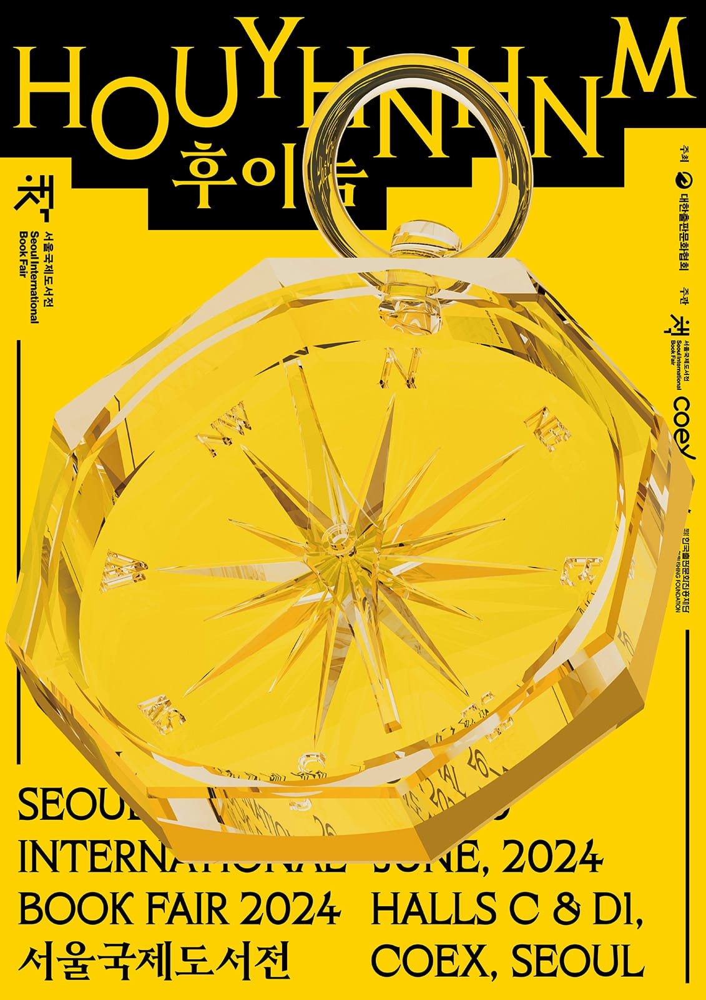
서울국제도서전 2024 를 다녀왔습니다.
작년에 이런 저런 일로 예매했던 티켓도 환불하며 참석하지 못했던 서울국제도서전. 올해도 코엑스에서 어김없이 열려 관람하러 갔습니다. 작년 일로 문체부의 지원도 받지 못하(않)고 규모를 줄이며 3층에서 하게 되었는데, 사람들이 더 몰리며 제가 관람한 2024년 6월 29일(토)은 네이버 예매 티켓 수령만 1시간이 걸렸습니다. 오후가 되며 사람들은 더 몰렸고 2시간이 걸린 관람객도 있는듯 했습니다.
이런 혼돈의 전시장이었음에도, 여러 책들과 글들, 좋은 책들을 추천 받아 앞으로의 독서 생활에 큰 도움이 되었습니다. 소전문화재단에서 준비한 소전300권 이것에 도전하는 것만으로도 이번생의 독서 생활은 잘 했다 말할 수 있을겁니다.
기억에 남는 전시 부스
이번 전시에서는 소전서림이 제일 기억에 남았습니다. 소전문화재단이 권하는 고전 300권에 도전해볼 생각입니다.
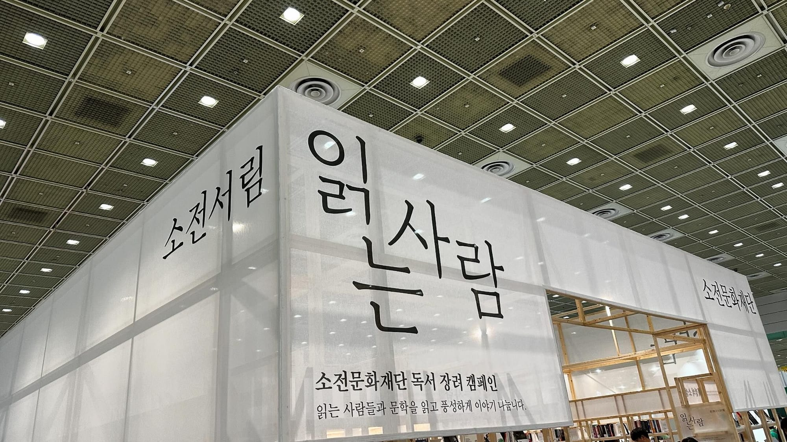
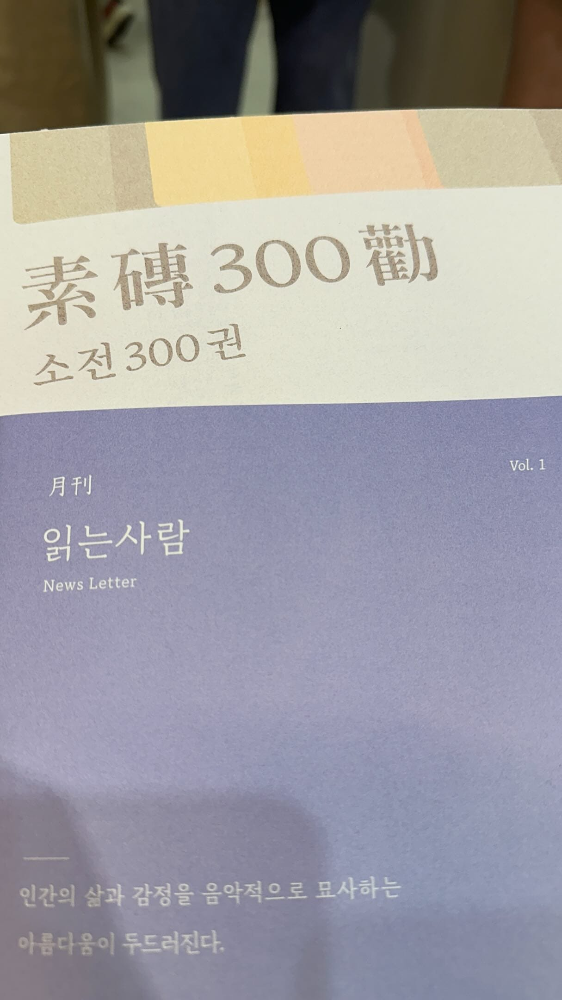
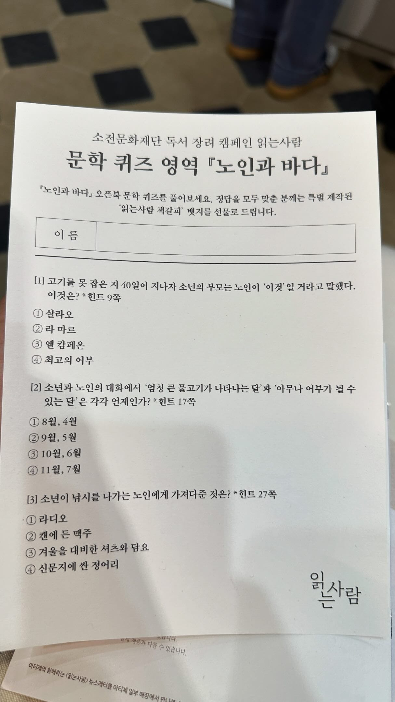
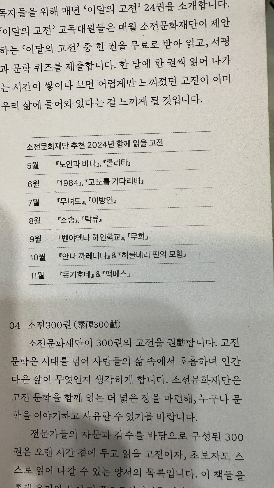
구일도시의 문학자판기와 출판사들이 준비한 좋은 글귀들을 데리고 올 수 있었습니다.
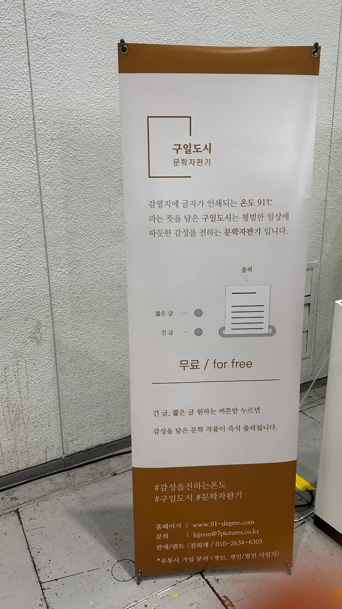
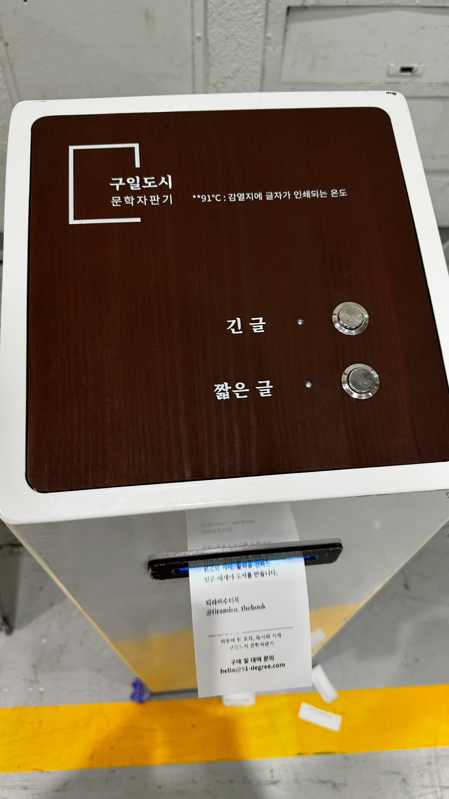
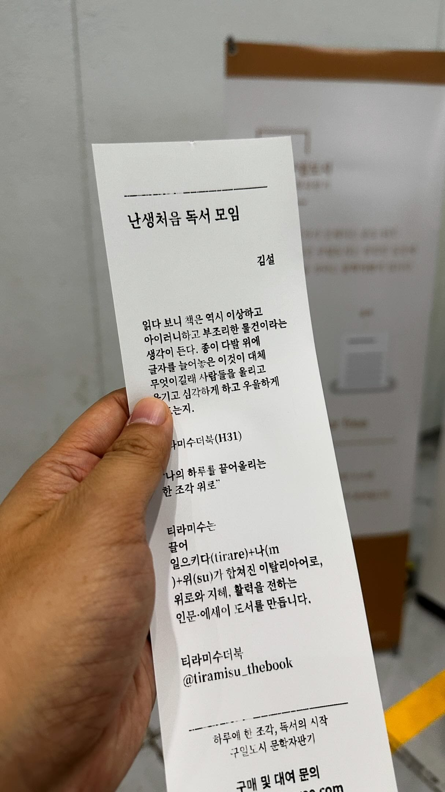
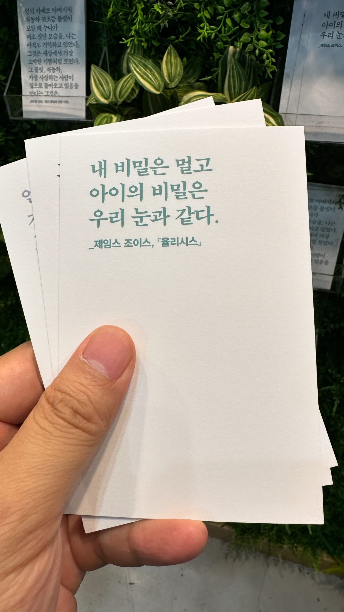
서울국제도서전 주제 후이늠
이번 서울국제도서전 2024의 주제는 후이늠입니다. 저도 생소한 단어라 뭐지? 했는데, 흔히 알고 있는 걸리버 여행기의 1부 소인국 2부 거인국 3부 라퓨타 에 이은 4부에 등장하는 종족이 후이늠입니다. 인간의 어두운 면을 지닌 존재를 묘사할 때 쓰는 말이기도 합니다. 이런 후이늠에서 벗어나 좋은 세상으로 가기 위한 걸리버의 모험을 함께 하고자 하는 마음을 담았습니다.
2025 서울국제도서전
출판사, 저자, 독자가 한자리에서 만나는 우리나라의 가장 큰 책 축제
sibf.or.kr
서울국제도서전 2024를 준비한 사무국의 후기 인사
오늘 마무리된 서울국제도서전을 준비한 사무국의 인사가 찡합니다. 작년의 모종의 사건으로 홀로서기를 시도한 사무국의 용기와 성황리에 마칠 수 있게 참석한 출판사들과 저자, 독자들에게 박수를 보내고 싶습니다.
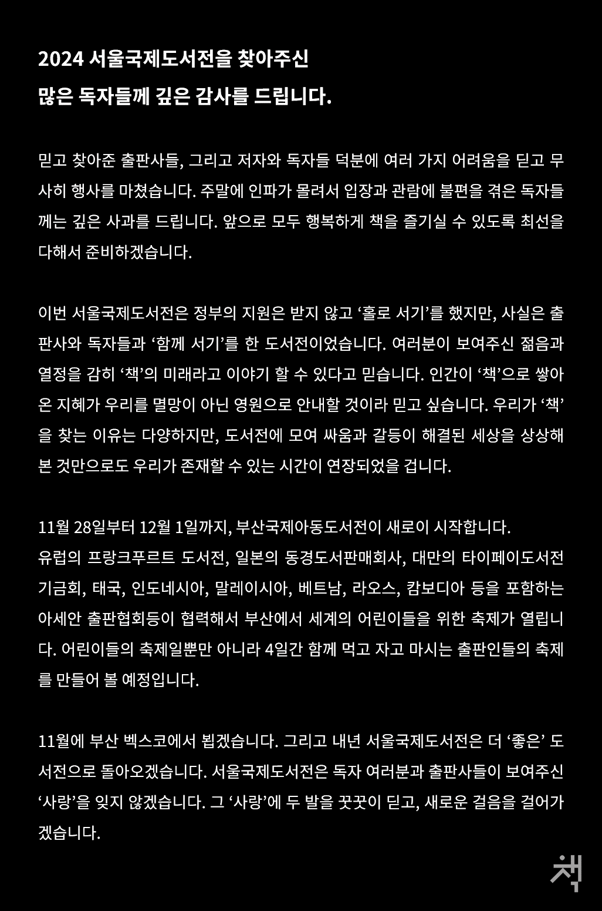
서울국제도서전 2024 인사 전문
2024 서울국제도서전을 찾아주신 많은 독자들께 깊은 감사를 드립니다.
믿고 찾아준 출판사들, 그리고 저자와 독자들 덕분에 여러 가지 어려움을 딛고 무 사히 행사를 마쳤습니다. 주말에 인파가 몰려서 입장과 관람에 불편을 겪은 독자들 께는 깊은 사과를 드립니다. 앞으로 모두 행복하게 책을 즐기실 수 있도록 최선을 다해서 준비하겠습니다.
이번 서울국제도서전은 정부의 지원은 받지 않고 홀로 서기를 했지만, 사실은 출 판사와 독자들과 함께 서기를 한 도서전이었습니다. 여러분이 보여주신 젊음과 열정을 감히 책의 미래라고 이야기 할 수 있다고 믿습니다. 인간이 책으로 쌓아 온 지혜가 우리를 멸망이 아닌 영원으로 안내할 것이라 믿고 싶습니다. 우리가 책 을 찾는 이유는 다양하지만, 도서전에 모여 싸움과 갈등이 해결된 세상을 상상해 본 것만으로도 우리가 존재할 수 있는 시간이 연장되었을 겁니다.
11월 28일부터 12월 1일까지, 부산국제아동도서전이 새로이 시작합니다.
유럽의 프랑크푸르트 도서전, 일본의 동경도서판매회사, 대만의 타이페이도서전 기금회, 태국, 인도네시아, 말레이시아, 베트남, 라오스, 캄보디아 등을 포함하는 아세안 출판협회등이 협력해서 부산에서 세계의 어린이들을 위한 축제가 열립니 다. 어린이들의 축제일뿐만 아니라 4일간 함께 먹고 자고 마시는 출판인들의 축제 를 만들어 볼 예정입니다.
11월에 부산 벡스코에서 뵙겠습니다. 그리고 내년 서울국제도서전은 더 좋은 도 서전으로 돌아오겠습니다. 서울국제도서전은 독자 여러분과 출판사들이 보여주신 사랑을 잊지 않겠습니다. 그 사랑에 두 발을 꾸이 딛고, 새로운 걸음을 걸어가겠습니다.
서울국제도서전 관람 후기
문체부의 지원을 받지 않고 진행되며 축소되어 열린 이번 도서전은, 15만명이 다녀가며 작년보다 더 많은 관람객이 방문하여, 티켓 수령에 많은 시간이 걸리기도 하는 등 여러 어려움들이 있었습니다. 한국의 독서량이 줄고 있다는 통계에도 불구하고, 이런 관심들은 좋은 신호라고 생각합니다. 안전가옥과 소전서림 등 출판업계의 불황에도 불구하고 독자와의 접점을 늘려가려는 노력들이 독서인들을 늘려나가며 이런 관심들을 만들어내는 것이 아닌가 하는 생각이 들었습니다. 내년에는 부디 더 큰 공간에서 더 많은 사람들이 편안히 도서전을 즐길 수 있기를 기대합니다.
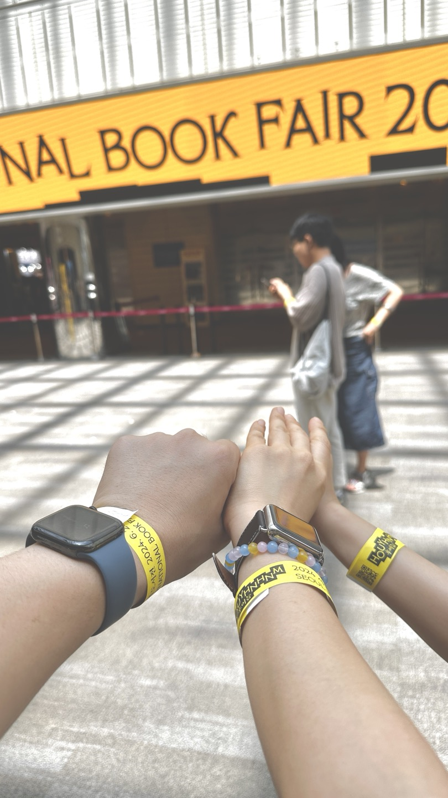